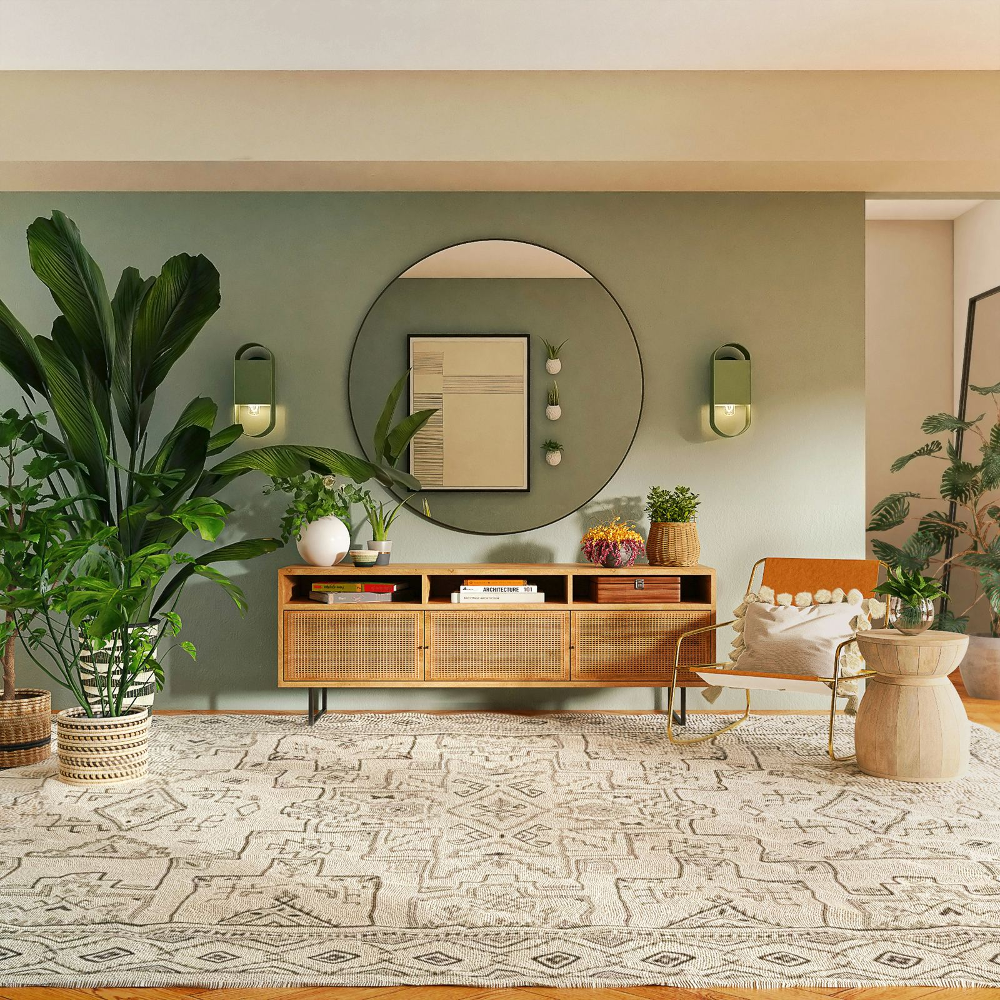

Harmonização de ambientes: a energia da sua casa está drenando o seu sono e sua produtividade?
Nossa casa é uma extensão do nosso próprio corpo energético. É o lugar onde deveríamos nos refazer, descansar e nutrir nossas relações familiares. No entanto, muitas pessoas relatam que ao entrar em casa sentem dores de cabeça inexplicáveis, insônia ou irritabilidade constante.
Na Geobiologia e Radiestesia Ambiental, sabemos que o espaço físico acumula frequências vibracionais que podem fortalecer ou esgotar a vitalidade dos seus moradores.
O que pode estar errado com a energia do seu imóvel?
Como funciona a harmonização com Leila Goddard
Por meio da radiestesia à distância, Leila analisa a planta ou o endereço do imóvel para mapear o nível de vibração da casa e identificar os pontos de estagnação. A partir desse diagnóstico, são aplicados gráficos radiônicos, símbolos de neutralização e correções energéticas específicas para:
- Limpar memórias e impregnações negativas das paredes e cômodos.
- Neutralizar focos de poluição eletromagnética e geopática.
- Elevar a frequência da casa para atuar a favor da saúde, da prosperidade e da harmonia familiar.
Tratar o seu espaço é essencial para garantir que a sua energia pessoal não continue sendo drenada no local onde você deveria se reequilibrar.